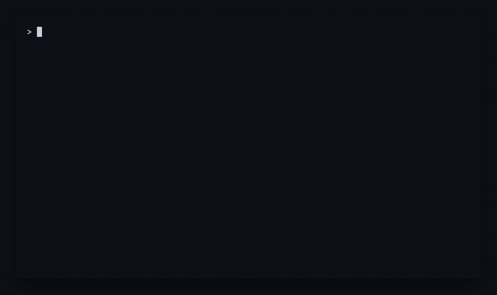

The quiet control point for skills shared across coding agents. Install once, declare availability across agents, and keep environments in sync. Standalone Go binary with zero language runtime dependencies.
# macOS and Linux (standalone Go binary) $ curl -fsSL https://raw.githubusercontent.com/akunzai/skills-manager/main/install.sh | bash # Windows PowerShell PS> irm https://raw.githubusercontent.com/akunzai/skills-manager/main/install.ps1 | iex # Add a skill and inspect availability $ skills add akunzai/agent-skills $ skills ls
Linux, macOS, and Windows. Source on GitHub · Latest release · JSON Schema

npx skills: Zero runtime dependenciesnpx skills runs on Node.js and executes via npm/npx. Skills Manager compiles to a single native Go binary with zero language runtime dependencies. It starts in milliseconds, works in minimal environments (containers, servers, CI), and uses system git only for remote updates.
npx skills: Local symlinks and live authoringWhen adding a local directory, npx skills copies files into the skills directory. Skills Manager provides first-class local symlink sources (skills add --symlink ./my-skill). Edits in your working tree reflect immediately across all agents without copying or reinstalling.
npx skills: Command sources with prerequisite checksSkills can be CLI tools or package managers rather than Git repos. Skills Manager supports executable command sources (--command) paired with prerequisite verification (--check), tracked declaratively in skills.json.
npx skills: Persistent availability policiesSkills Manager maintains declarative availability policies in configuration: defaultAgents, per-skill include, exclude, and follow-defaults. Universal agents that read the standard directory are recognized directly without creating redundant links.
Network fetching is isolated to skills update; reconciling disk with skills sync is 100% offline from a shared cache. skills doctor --fix diagnoses broken symlinks, physical collisions, and drift, repairing manageable state safely.
Exit 0 when Scope matches declared Config, 1 when drift or pending action exists (reporting next steps without misleading error styling), and 2 on real failure. Designed for clean automation in CI pipelines.
# Add a skill from GitHub shorthand $ skills add akunzai/agent-skills --skill agents-md # Target specific agents with persistent policy $ skills add anthropics/skills --agent claude,antigravity --yes
Remote sources are cached locally; duplicate copies are deduplicated automatically.
# Symlink a local skill directory $ skills add --symlink ~/code/my-custom-skill # Edits in ~/code/my-custom-skill reflect immediately across agents $ skills ls
Author and iterate on skills in real-time without copying files or reinstalling.
# Add a skill installed via external CLI command $ skills add playwright-cli \ --command "playwright-cli install --global --skills=agents" \ --check "which playwright-cli" # Prerequisite is verified before execution; skips when check passes $ skills sync
Integrate CLI package managers and tools into the same declarative skills.json.
# Initialize project-level configuration $ skills --project init $ skills --project add akunzai/agent-skills --skill agents-md $ git add .agents/skills.json && git commit -m "chore: add agent skills" # Teammates clone and restore declared state deterministically $ skills --project update && skills --project sync
Declare team-wide skills in .agents/skills.json beside your repository code.
| Scope | Command | Configuration | Skills Directory |
|---|---|---|---|
| Global | skills ... |
~/.agents/skills.json |
~/.agents/skills/ |
| Project | skills --project ... |
./.agents/skills.json |
./.agents/skills/ |
| Command | Intent | Exit Contract |
|---|---|---|
skills ls |
Inspect declared skills, sources, and agent availability | 0 clean |
skills add |
Declare skills from Git, local symlink, or command | 0 added |
skills sync |
Reconcile Scope from existing Cache without network access | 0 synced, 1 drift |
skills sync --dry-run |
Preview reconciliation actions non-mutatingly | 0 synced, 1 pending work |
skills update |
Refresh declared remote Sources into shared Cache | 0 updated |
skills outdated |
Inspect Remote → Cache → Scope freshness | 0 fresh, 1 outdated |
skills doctor |
Diagnose broken symlinks, collisions, and drift | 0 healthy, 1 findings |
skills doctor --fix |
Safely repair diagnosed health issues | 0 repaired |
skills prune |
Remove unmanaged items from skills directory | 0 pruned |
skills guide |
Print or install agent guidance for AI coding assistants | 0 completed |
Agents that natively read ~/.agents/skills/ (or project ./.agents/skills/) directly without requiring individual symlinks.
Includes OpenAI Codex, OpenCode, GitHub Copilot CLI, Cursor, and any tool conforming to the agent skills standard.
git command line tool for cloning remote repositories into cache.